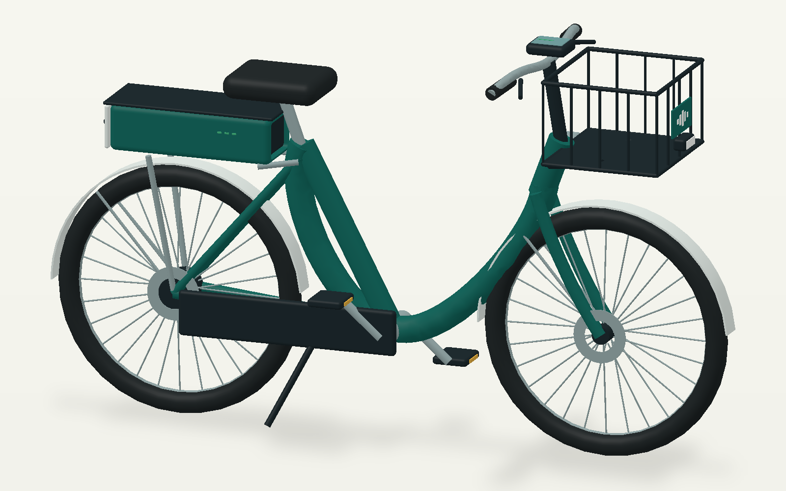

Rancangan layanan
Menyiapkan model…
Aktifkan akselerasi grafis pada browser, lalu coba lagi.
Tampilkan kembali untuk melanjutkan eksplorasi.
Geser untuk memutar · Gulir untuk memperbesar
Memuat katalog…
Pratinjau statis tetap dapat dilihat di bawah ini.
